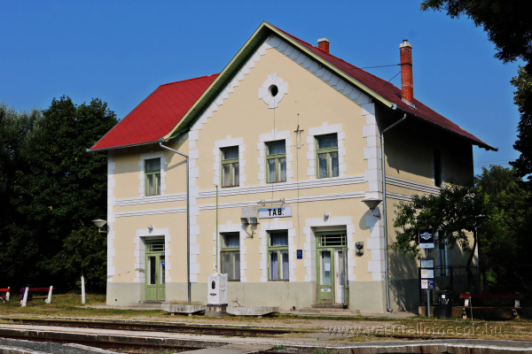
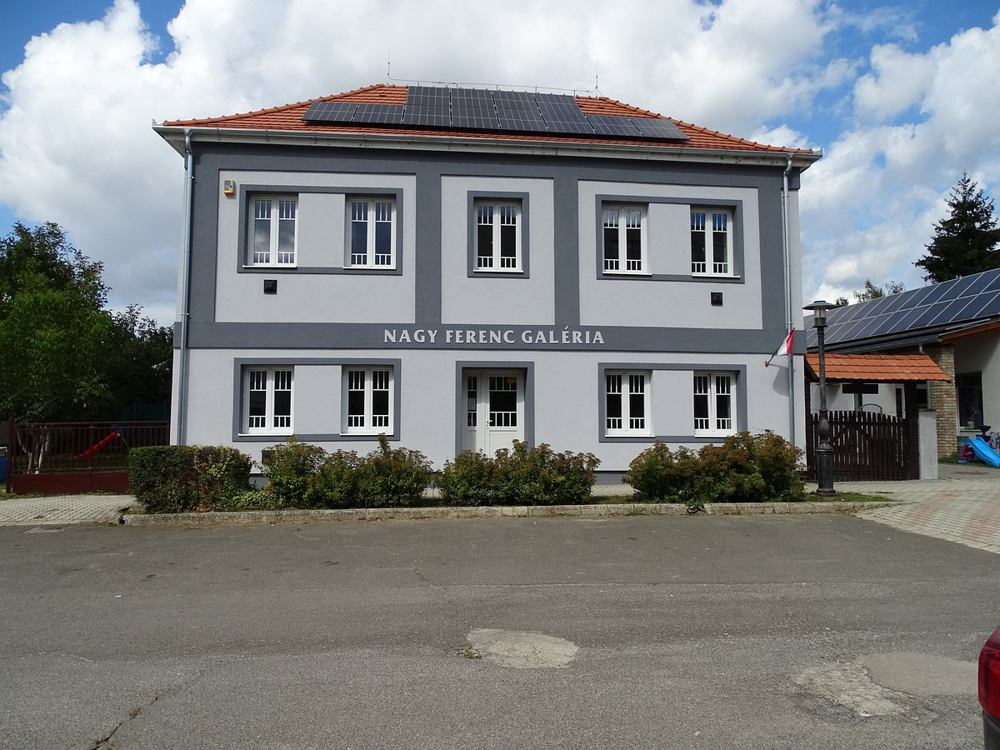
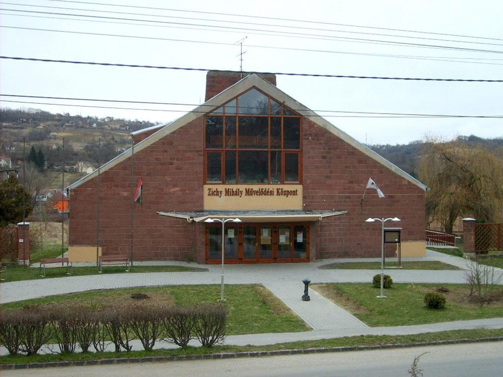
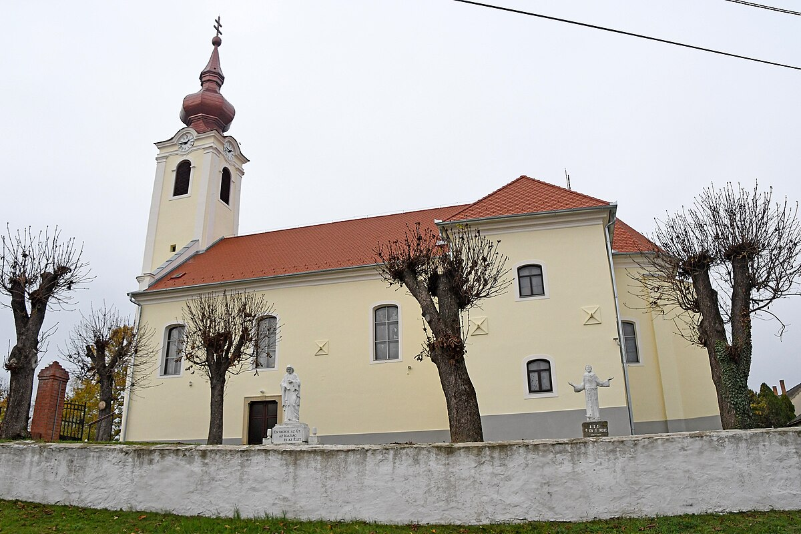

Warum lohnt sich ein Besuch in Tab?
Tab ist eine ruhige Kleinstadt im Komitat Somogy. Grüne Umgebung, Kulturprogramme und eine entspannte ländliche Stimmung machen den Ort zu einem angenehmen Zwischenstopp.

Entdecke Tab mit einem Klick!


Tab ist eine ruhige Kleinstadt im Komitat Somogy. Grüne Umgebung, Kulturprogramme und eine entspannte ländliche Stimmung machen den Ort zu einem angenehmen Zwischenstopp.


Eine Dauerausstellung mit Werken des lokalen Holzschnitzers. Mehr als 300 Kunstwerke zeigen Motive der Volkskunst.
Route planen
Das Kulturzentrum der Stadt bietet regelmäßig Theateraufführungen, Konzerte und Familienprogramme.
Route planen
Die barocke Kirche aus dem Jahr 1762 ist eines der wichtigsten sakralen Gebäude der Stadt.
Route planen